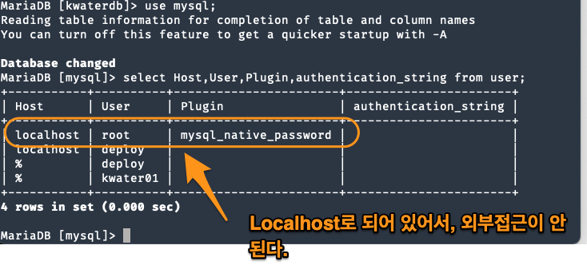

DB Usage
Table of Contents
1 my.cnf 위치 확인
mysqld –verbose –help | grep -A 1 'Default options'
보통 mariadb는 /etc/mysql/my.cnf에 있다. mariadb와 mysql은 동일한 이름을 쓴다고 보면 된다. my.cnf에서 db에 대한 설정을 한다고 하는데, 실제 설정하는 위치는 다음과 같은거 같다.
/etc/mysql/mariadb.conf.d/50-server.cnf
여기서 bind address를 설정할 수 있다.
2 DB 서버(start, stop)
service mysql restart
하면 1.ubuntu, 2.deploy를 선택한다. 사용자 계정을 선택해서 mysql server를 중지하거나 시작, 재시작 할 수 있다.
3 AWS DB 접근하게 하기
aws 로긴한 후에 security group으로 들어간다.
Figure 1: mysql port1
Figure 2: mysql port2
해당 port를 허가한다.
4 Table 만들기
5 root로 외부접속
현재 root는 외부에서 접속할 수 없게 되어 있다.
 root를 바꾸지 말고, 개인 사용자를 만들고 외부에서 접근할 수 있게 하자.
grant all privileges on . to 'kwater01'@'%' identified by '1234'